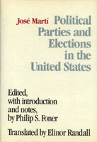

<body bgcolor="#FFFFFF" text="#000000" link="#0000FF" vlink="#CC0000" alink="#CC0000"><center><hr width="350" size="1" align="center" noshade>Cuban observations and analysis of U.S. elections and political parties<hr width="350" size="1" align="center" noshade><p><a href="https://cdcshoppingcart.uchicago.edu/Cart/ChicagoBook.aspx?ISBN=9780877226048&&PRESS=temple" target="_top">Buy this book!</a> | <a href="https://cdcshoppingcart.uchicago.edu/Cart/Cart.aspx?PRESS=temple" target="_top">View Cart</a> | <a href="https://cdcshoppingcart.uchicago.edu/Cart/Cart.aspx?PRESS=temple" target="_top">Check Out</a></p><p></p></center><!--none//--><h1>Political Parties and Elections in the United States</h1>
<h3>Jose Marti, edited by Philip S. Foner, translated by Elinor Randall</h3>
<P>cloth 0-87722-604-0 $35.50, Jan 89, <FONT COLOR=#990033>Out of Stock Unavailable</FONT>
<BR> 208 pp
</P><BLOCKQUOTE><I>"Anything that Philip Foner writes is worth reading for its clarity, scholarship, and honesty. His editing of the writings of Jose Marti is a fine accomplishment. Marti is a giant in the story of the Americas...."</I>
<br>&#151<b>Carleton Beak</b><I></I></BLOCKQUOTE>
<p>Cuban writer and patriot Jos� Marti (1853-1895) published numerous articles on U.S. politics in the Latin American press. The ten articles in this volume chronicle Marti�s observations and analysis of U.S. elections and political parties.
<BR>&nbsp;<H2>About the Author(s)</H2>
<P><b>Philip S. Foner</b> is Professor Emeritus of History, Lincoln University.</P>
<P><b>Elinor Randall</b> is a noted translator of Spanish literature. Together they have published five volumes of Jose Marti�s writings in English.</P>
<BR><H2>Subject Categories</H2>
<p><A HREF="/tempress/political.html" TARGET="_top">Political Science and Public Policy</a>
</p>
<p align="center"><a href="https://cdcshoppingcart.uchicago.edu/Cart/ChicagoBook.aspx?ISBN=9780877226048&&PRESS=temple" target="_top">Buy this book!</a> | <a href="https://cdcshoppingcart.uchicago.edu/Cart/Cart.aspx?PRESS=temple" target="_top">View Cart</a> | <a href="https://cdcshoppingcart.uchicago.edu/Cart/Cart.aspx?PRESS=temple" target="_top">Check Out</a></p><p><font face="Arial" size="1"><a href="copyright.html" onMouseOver="window.status='Web Copyright Policy';return true;" onMouseOut="window.status=''" title="Web Copyright Policy">&copy;</a> 2015 <a href="http://www.temple.edu" target="new" onMouseOver="window.status='Link to Temple University home page';return true;" onMouseOut="window.status=''" title="Link to Temple University home page">Temple University</a>. All Rights Reserved. http://www.temple.edu/tempress/titles/643_reg.html</font></p>